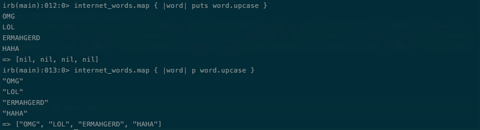
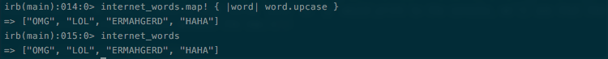

Enumerable Methods
#map
October 29, 2015
Ze Map Method
Simply put, the map method iterates through a collection of data, like a hash, array, or set, performs the specified code on each element of the collection, and returns a new array. Here's an example: Let's say we want to make internet slang words ALL CAPS, because, well sometimes you just need to express yourself more aggresively.
internet_slang = ["omg", "lol", "ermahgerd","haha"] internet_words.map {|word| word.upcase}
The above map method would return:
["OMG", "LOL", "ERMAHGERD","HAHA"]
What's important to note here is the return value that map produces. In the above example we didn't include 'puts' or 'p' so nothing was actually printed to the console, but the return value was an array of all upercase internet slang words. If we were to observe what using 'puts' or 'p' would print to the console, we'll see that there's an apparent difference in return values between the two.

See what happened there? When we 'puts' word.upcase, the internet slang words were capitalized, but the return value was actually nil for each word. For 'p', the words were both printed and returned as all uppercase. Though this is illustration reflects what 'puts' and 'p' do, it's important to take note of the fact that an array of nils can be returned using this method if 'puts' is used.
Map! BANG BANG
This method also has an evil brother named map! (the exclamation point is called a 'bang'). He's considered evil because this method will literally destroy the inputted object by replacing the original content with whats returned by the method. ERMAHGERD! If we were to check what values internet_slang has after running through the map method, it would still have the all lowercase words. But what if we didn't want the lowercase words to take up precious memory space, and we just wanted to nix it. This is where we'll call up map! and ask him to complete a special mission of destruction (he likes those kinds of missions). We'd call map! on internet_slang and get the same result (all uppercase words). But to see what else map! did when everyone was asleep, at the darkest hour of the night, we'll have to consult irb.

EGAD!! map! killed the lowercase internet slang words! What horror. Well not really because now we have freed memory space in our program, but it is somewhat tragic that someone had to get hurt in the process. The point here is that it ultimately depends on you, the programmer, to decide what you want to destory or keep. This a matter of using destructive vs non-destructive methods, but that's another blog post topic entirely. In the case of map and map!, we've got a powerful method that iterates through an object and returns an array of new values based on the code in the method's code block. Just don't forget about the return values of map!